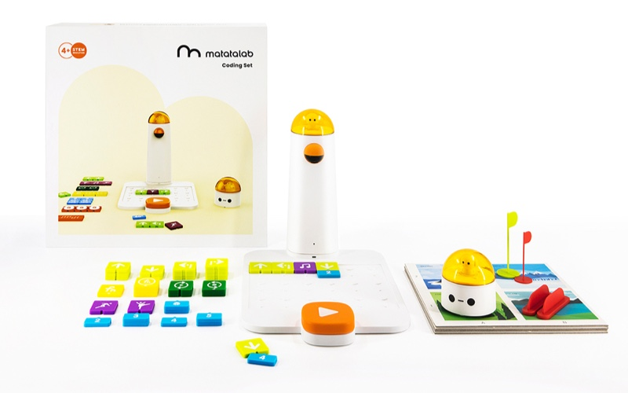
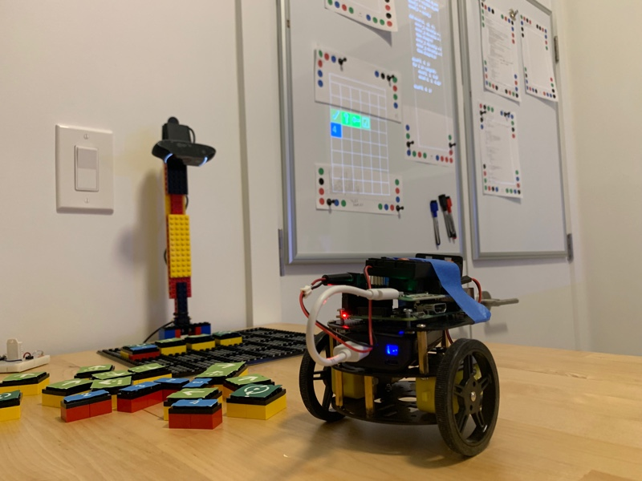
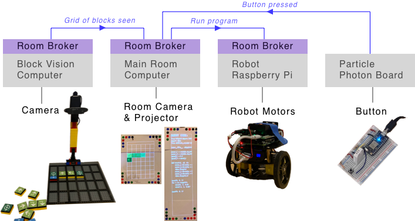

August 18, 2019
I am exploring the idea of "programmable spaces" — where the concept of a computer is expanded outside a little rectangular screen to fill the entire room. Interacting with the programmable space means using physical objects, not virtual ones on a screen. Bringing computing to scale of a room makes it a communal and social experience.
Previously, I experimented with programmable spaces with clipboards representing code and with fixed 3x3 grid of papers on a wall.
But the demos have been focused on the textual aspects of code. Peices of paper with code on them were mapped to code running on a computer. It was nice to interact with physical objects instead of using a single computer monitor, but the real "work" still involved typing code in a little rectangle. The peices of paper could be moved around the physical world, but in my experiments so far programs were not aware of their physical location, the location of other programs, and overall didn't use their physical afforadances to change their behavior. A peice of code could be moved from a table to the wall, but it would have the behave the same either way.
Therefore I wanted to play with non-textual ways of coding. I also wanted to use this idea to gauge how well the system is at supporting physical affordances and to be a platform to prototype new ideas in this area.
In a programmable space, programs are in the physical world so they should have properties like other physical things:
In the photo shown above, programs are represented by papers with colored dots on the corners. (The colored dots help a camera recognize the papers) The locations of all programs are claimed to the room so any program can use them. In this case one paper draws a line from itself to all the other papers on the same wall.
This video above shows two "data sources": one that is a number that counts from 0 to 100 repeatedly and another is the angle of the paper in degrees. Both of these data sources show their value and make their current value available to the room. Another program is a gauge graph that displays whatever number is claimed by the program above it. You can hold the guage graph in your hand and point it at whatever data source you'd like to be shown on the graph. The spatial relation helps connect the idea that the graph is separete from the data, reusable, and depends on what is is pointing at and nothing else.
The video above shows how you collect and visualize data over time in a programmable space. A program could be a "data store" that saves the last 20 values from whatever data source is above it. Other programs can look at the "data store" they are pointing at an visualize them or produce a modified set of data. The video above shows a bar graph, filter that only keeps odd values, and a program that shows the average of the data.
When they are all used the flow of data matches the arrangement of the papers. This is similar to node/graph based visual programming environments like MaxMSP where you can modify a program by rearranging "nodes", but the nodes themselves are chunks of code that you may or may not care about. It is hard to see in the video, but when a program depends on something that is is pointing at, a blue line is projected from the paper into the space the paper is "looking at". This helps show the connection, or potential connection, between papers.
One property that I'm especially interested in is a programmable space ability to support understanding by being able recreate itself and not depend on an order. For example, all of these programs in the demo above are independent and magically update when they point at a program that claims something to the room in a format they can work with. Someone new can begin to understand what is going on by removing a program and seeing what happens. "Undoing" is a simple as putting a piece of paper back were you found it. Because this is normal, there is no harm in someone new to the space to break things. Breaking things encourages you to get a sense of what is important without reading the logic connected to each program.
But the rearranging of code spatially is still based on the concept of textual code and it can be intimidating. Therefore I tried out a less intimidating system where there is no text by recreating the coding robot for kids by Matatalab.
 Matatalab's Coding Set: Colored tiles with symbols on them (left) are placed on a board (middle) to program the robot (right).
I can't speak for how affective the Matatalab product is at teaching kids basic coding concepts, but I think their product will well designed and I admire them for making a physical and screen-free way to learn.
 My text-free robot programming environment
To recreate this idea, I built a board, stand, and "action blocks" out of LEGOs. The action blocks had symbols on them to represent actions like "move forward", "turn right", "start a loop", and numbers. A webcam looked down at the blocks on the board and feed data into a program that used computer vision to guess the current state of the board. The state of the board was claimed to the room so other programs could use it.
The robot you programmed was built from a Raspberry Pi and a robot chassis using a couple DC Motors. A Particle Photon board hooked up to a button would notify the room whenever it's button was pressed. Finally, other programs running in the room visualized the state of the board, converted the board into code that made the robot perform the movements, showed the robot code, and told the robot to current the code when the button was pressed.
 Overall architecture of this demo. Messages syndicated between brokers are shown on the top in blue.
Each computer in the room was running the exact same "room message broker" that allowed programs to make claims to the room and for claims to be syndicated between computers. The only difference between the computers was what programs were running on them and what things were connected to them like cameras, motors, or projectors.
I liked this text-free robot demo because it was fun to play with and because it showed some nice properties of the programmable space system:
But even without having text, it's still has the feel of coding: syntax errors, etc. Objects themselves were also "technical".
Therefore I wanted to try out an interaction model where any object in the room could be connected to the room. Examples: Something you drew or a book.
I built a system where you could use a laser pointer to define "regions" in space and an event is fired when one is hovered/selected. Laser pointer is like a mouse. Programs in the room can subscribe to what regions are selected or toggled and act that.
In this first demo we start with a tiger face made our of construction paper. We define a region roughly around the tiger's face and name the region "tiger". Another program subscribes to facts about a laser being in a region named "tiger" and shows "RAWR!". Because the program is also a piece of paper, we can cut it to make it and the "RAWR" bigger.
My partner and I have a map with pins of restaurants we have been to together over the years. The map is cool by itself but in this demo I added some magic to allow you to select a region on the map to see the neighborhood name and the restaurants we went too.
I liked how the laser regions allowed the map to be a normal and beautiful object by itself and only if you interact can you see some additional annotations about it.
Other areas I'd like to explore:
If you have thoughts or questions, feel free to email or reach out to me on Twitter.